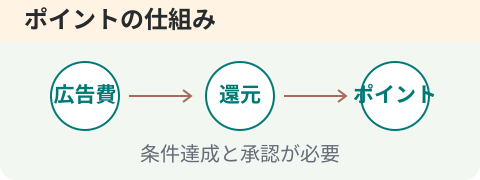

今日のおすすめ案件
 はじめの一歩
はじめの一歩暮らしに合うポイ活を
いつものお買い物を、
ポイントのきっかけに。
まずは、無理なく続けられる方法から。
モッピーの始め方を読むおすすめ案件は準備中です。掲載例として、公開済みの初心者ガイドをご案内しています。
人気のポイントサイト
主要4サイトを公式情報で確認して掲載しています。掲載順は人気順位ではありません。
各ポイントサイトの
今日のランキング
2026-09-09 取得 · 各ポイントサイトの公開ランキング 一部は前回取得分です。
- 1

15,000P公式掲載 - 2
※超高還元12,000P※楽天銀行 口座開設
公式ランキング1,500P公式掲載 - 3
GMOあおぞらネット銀行【法人口座開設】
公式ランキング20,100P公式掲載 - 475,000P公式掲載
- 565,000P公式掲載
各サイトが公開しているランキングを表示します。取得失敗時は前回の正常データを残します。
モッピーの掲載案件と確認日を見る新着記事
一覧
ポイントサイトNEWS
公式お知らせを1日1回取得します。日付は公式の掲載日です。取得できないサイトは前回データを保持します。 今回未取得：モッピー。
- 2026.09.04ワラウ 9月は5のつく日のお買い物でポイント5.5%増量 GoGoキャンペーン
- 2026.09.01ちょびリッチ 【高ポイントアンケート】 5問回答(8/25-31)でのボーナスポイント反映完了
- 2026.09.01ワラウ 抽選で合計300名様に当たる！「読んで当てる ハーゲンダッツプレゼントキャンペーン」開始
- 2026.08.28ワラウ 【最大1,900pt】Qoo10 メガ割 × ワラウでおトク
- 2026.08.26ちょびリッチ 【お問合せ回答】 一部のお問合せが正常に振分けられない事象改善
- 2026.08.24ワラウ 【予告】最大1,900pt！Qoo10 メガ割 × ワラウでおトク
今週の特集

今週の特集
ゲーム案件の選び方
高還元だけで決めない、7つのチェック

選び方ガイド
ポイントサイトの選び方
主要4サイトを、使い方から比べる
モッピー編
無料案件特集
小さく始めるヒント
準備中
高還元案件特集
還元額と条件を一緒に比較
初心者ガイド
START HEREまずはモッピーを例に、基本から。
ABOUT US
POI DAYSについて
ポイントサイトの案件や使い方を、
自分のペースで調べられる場所。
還元額だけでなく、条件や注意点も一緒に。
暮らしに合うポイ活を見つけるお手伝いをします。